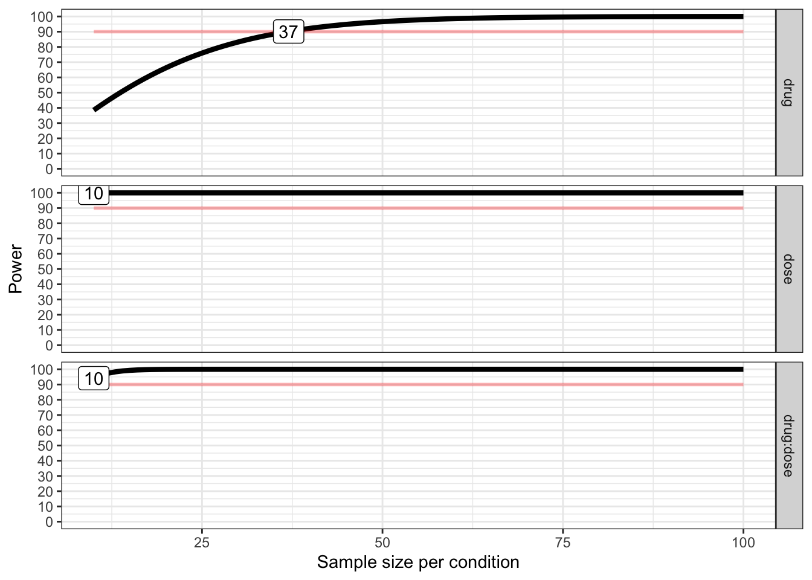

library(tidyverse)
library(afex) #for running ANOVA with Type III sums of squares
library(ggrain) #for creating raincloud plots
library(emmeans) #for examining simple effects
library(effectsize) #for calculating effect size
library(broom) #for cleaning up models
library(kableExtra) #for viewing tables produced by `kable` in html
library(Superpower) #for power analysisModule 9: Lab Starter KEY
Purpose
Today’s lab will cover categorical x categorical models (i.e, “Factorial ANOVA”). We will go over how to specify interaction terms in R, how to interpret the model output, and how to visualize the results.
For today’s lab, you will need to load the following libraries.
Research scenario
Today’s dataset examines the effectiveness of two drugs (Drug_A and Drug_B) at three different doses (Low, Medium, and High) in decreasing patients’ pain level.
Read in the data
Today’s dataset is called drug_dose.csv. Let’s read it in and name it pain.
Examine the Data
- Use
View()to examine the full dataset - Use
str()to look at the structure of the data - Use
head()to look at the first few rows of the data
View(pain)
str(pain)spc_tbl_ [51 × 4] (S3: spec_tbl_df/tbl_df/tbl/data.frame)
$ subid : num [1:51] 1 2 3 4 5 6 7 8 9 10 ...
$ drug : chr [1:51] "Drug_B" "Drug_B" "Drug_B" "Drug_B" ...
$ dose : chr [1:51] "Low" "High" "Low" "High" ...
$ pain_level: num [1:51] 10 9 8 1 9 8 10 2 10 3 ...
- attr(*, "spec")=
.. cols(
.. subid = col_double(),
.. drug = col_character(),
.. dose = col_character(),
.. pain_level = col_double()
.. )
- attr(*, "problems")=<externalptr> head(pain)# A tibble: 6 × 4
subid drug dose pain_level
<dbl> <chr> <chr> <dbl>
1 1 Drug_B Low 10
2 2 Drug_B High 9
3 3 Drug_B Low 8
4 4 Drug_B High 1
5 5 Drug_A Medium 9
6 6 Drug_B Low 8Question: What do you notice about the structure of the data? What changes might you want to make?
Turn drug and dose into factors.
Examine the structure of the data to confirm that these changes were made.
pain <- pain %>%
mutate(drug = as.factor(drug),
dose = as.factor(dose))
str(pain)tibble [51 × 4] (S3: tbl_df/tbl/data.frame)
$ subid : num [1:51] 1 2 3 4 5 6 7 8 9 10 ...
$ drug : Factor w/ 2 levels "Drug_A","Drug_B": 2 2 2 2 1 2 2 1 2 1 ...
$ dose : Factor w/ 3 levels "High","Low","Medium": 2 1 2 1 3 2 2 1 3 1 ...
$ pain_level: num [1:51] 10 9 8 1 9 8 10 2 10 3 ...2x2 Factorial ANOVA
For our first analysis, let’s only compare the Low and Medium dose levels.
Create a new data object called pain_red (pain reduced) in which you have filtered out the High dose levels.
pain_red <- pain %>%
filter(dose != "High") %>%
droplevels() #to remove R's memory of the "High" level Let’s examine participants’ average pain at each level of drug and dose.
Group the data by drug and dose and get the means.
#students: fill in this code to get the means
pain_red %>%
group_by(drug, dose) %>%
summarize(pain_level = mean(pain_level)) %>%
pivot_wider(names_from = "drug",values_from = "pain_level" ) %>% #Note, here I'm pivoting the table to make it easier to read.
kable() %>%
kable_styling()`summarise()` has grouped output by 'drug'. You can override using the
`.groups` argument.| dose | Drug_A | Drug_B |
|---|---|---|
| Low | 8.500000 | 8.222222 |
| Medium | 7.714286 | 6.900000 |
Question: From the means, what can you say about the relation between drug and dose in predicting pain?
Linear modeling approach: treatment/dummy-coding
Let’s see if this is true, run a regression analysis predicting pain_level from drug, dose, and their interaction.
\[\hat{pain_i} = \beta_0 + \beta_1drug + \beta_2dose + \beta_3drugxdose \]
Run this model using lm().
#students: create and run the model
model1 <- lm(pain_level ~ drug * dose, data = pain_red)
summary(model1)
Call:
lm(formula = pain_level ~ drug * dose, data = pain_red)
Residuals:
Min 1Q Median 3Q Max
-3.9000 -0.8536 -0.2222 1.2857 3.1000
Coefficients:
Estimate Std. Error t value Pr(>|t|)
(Intercept) 8.5000 0.5769 14.733 2.82e-15 ***
drugDrug_B -0.2778 0.7929 -0.350 0.729
doseMedium -0.7857 0.8445 -0.930 0.360
drugDrug_B:doseMedium -0.5365 1.1293 -0.475 0.638
---
Signif. codes: 0 '***' 0.001 '**' 0.01 '*' 0.05 '.' 0.1 ' ' 1
Residual standard error: 1.632 on 30 degrees of freedom
Multiple R-squared: 0.1462, Adjusted R-squared: 0.06078
F-statistic: 1.712 on 3 and 30 DF, p-value: 0.1857# here we can `tidy` the model and include the confidence intervals
lm(pain_level ~ drug * dose, data = pain_red) %>%
tidy(conf.int=TRUE) %>%
kable() %>%
kable_styling()| term | estimate | std.error | statistic | p.value | conf.low | conf.high |
|---|---|---|---|---|---|---|
| (Intercept) | 8.5000000 | 0.5769320 | 14.7331055 | 0.0000000 | 7.321748 | 9.6782523 |
| drugDrug_B | -0.2777778 | 0.7929172 | -0.3503238 | 0.7285435 | -1.897131 | 1.3415752 |
| doseMedium | -0.7857143 | 0.8445420 | -0.9303437 | 0.3596196 | -2.510499 | 0.9390705 |
| drugDrug_B:doseMedium | -0.5365079 | 1.1293355 | -0.4750651 | 0.6381811 | -2.842919 | 1.7699029 |
Question: Write the full model with parameter estimates filled in.
\[\hat{pain_i} = 8.50 - .28(drug) - .79(dose) - .54(drugxdose) \]
Question: What do each of the parameter estimates mean?
Linear modeling approach: deviation-coding
Now, let’s deviation code our predictors and run the model again!
#students: fill in values for deviation coding
contrasts(pain_red$drug) <- c(0.5, -0.5) # deviation code drug
contrasts(pain_red$dose) <- c(0.5, -0.5) # deviation code dose
#check out the structure of the data to check that this coding took effect
str(pain_red)tibble [34 × 4] (S3: tbl_df/tbl/data.frame)
$ subid : num [1:34] 1 3 5 6 7 9 11 12 14 15 ...
$ drug : Factor w/ 2 levels "Drug_A","Drug_B": 2 2 1 2 2 2 2 2 2 1 ...
..- attr(*, "contrasts")= num [1:2, 1] 0.5 -0.5
.. ..- attr(*, "dimnames")=List of 2
.. .. ..$ : chr [1:2] "Drug_A" "Drug_B"
.. .. ..$ : NULL
$ dose : Factor w/ 2 levels "Low","Medium": 1 1 2 1 1 2 2 2 1 1 ...
..- attr(*, "contrasts")= num [1:2, 1] 0.5 -0.5
.. ..- attr(*, "dimnames")=List of 2
.. .. ..$ : chr [1:2] "Low" "Medium"
.. .. ..$ : NULL
$ pain_level: num [1:34] 10 8 9 8 10 10 6 7 8 8 ...model2 <- lm(pain_level ~ drug * dose, data = pain_red)
summary(model2)
Call:
lm(formula = pain_level ~ drug * dose, data = pain_red)
Residuals:
Min 1Q Median 3Q Max
-3.9000 -0.8536 -0.2222 1.2857 3.1000
Coefficients:
Estimate Std. Error t value Pr(>|t|)
(Intercept) 7.8341 0.2823 27.748 <2e-16 ***
drug1 0.5460 0.5647 0.967 0.3413
dose1 1.0540 0.5647 1.867 0.0718 .
drug1:dose1 -0.5365 1.1293 -0.475 0.6382
---
Signif. codes: 0 '***' 0.001 '**' 0.01 '*' 0.05 '.' 0.1 ' ' 1
Residual standard error: 1.632 on 30 degrees of freedom
Multiple R-squared: 0.1462, Adjusted R-squared: 0.06078
F-statistic: 1.712 on 3 and 30 DF, p-value: 0.1857# again, we can `tidy` the model and include the confidence intervals
lm(pain_level ~ drug * dose, data = pain_red) %>%
tidy(conf.int=TRUE) %>%
kable() %>%
kable_styling()| term | estimate | std.error | statistic | p.value | conf.low | conf.high |
|---|---|---|---|---|---|---|
| (Intercept) | 7.8341270 | 0.2823339 | 27.7477399 | 0.0000000 | 7.2575243 | 8.410730 |
| drug1 | 0.5460317 | 0.5646678 | 0.9669965 | 0.3412772 | -0.6071737 | 1.699237 |
| dose1 | 1.0539683 | 0.5646678 | 1.8665281 | 0.0717695 | -0.0992371 | 2.207174 |
| drug1:dose1 | -0.5365079 | 1.1293355 | -0.4750651 | 0.6381811 | -2.8429187 | 1.769903 |
Question: Write the full model with parameter estimates filled in.
\[\hat{pain_i} = 7.83 - .55(drug) + 1.05(dose) - .54(drugxdose) \]
Question: What do each of the parameter estimates mean?
ANOVA approach
Now, we will run the same model using the ANOVA approach. We are going to use the aov_ez function in the {afex} package so that we can use Type III sums of squares!
#students: try to fill in the code below
aov_ez(id="subid", between=c("drug", "dose"), dv="pain_level", data=pain_red, anova_table = list(es = "pes")) %>%
nice()%>%
kable() %>%
kable_styling()Contrasts set to contr.sum for the following variables: drug, dose| Effect | df | MSE | F | pes | p.value |
|---|---|---|---|---|---|
| drug | 1, 30 | 2.66 | 0.94 | .030 | .341 |
| dose | 1, 30 | 2.66 | 3.48 + | .104 | .072 |
| drug:dose | 1, 30 | 2.66 | 0.23 | .007 | .638 |
Question: How do the results from the ANOVA compare to the Regression?
2x3 Factorial ANOVA
Now, we will use the full dataset to compare all levels of dose. First, lets check that the levels of our dose variable make sense. If not, change the order.
levels(pain$dose)[1] "High" "Low" "Medium"#students: change the order of the levels
pain <- pain %>%
mutate(dose = factor(dose,
levels= c("Low", "Medium", "High")))Question: What are the three effects that we are testing? What is the null and alternative hypothesis for each test?
Next, run a linear model predicting pain_level from drug, dose, and their interaction. Make sure you’re using the pain dataset.
model3 <- lm(pain_level ~ drug * dose, data = pain)
summary(model3)
Call:
lm(formula = pain_level ~ drug * dose, data = pain)
Residuals:
Min 1Q Median 3Q Max
-5.1429 -0.9000 -0.2222 1.3929 3.8571
Coefficients:
Estimate Std. Error t value Pr(>|t|)
(Intercept) 8.5000 0.6609 12.861 < 2e-16 ***
drugDrug_B -0.2778 0.9083 -0.306 0.76115
doseMedium -0.7857 0.9675 -0.812 0.42098
doseHigh -6.0000 0.8867 -6.767 2.26e-08 ***
drugDrug_B:doseMedium -0.5365 1.2937 -0.415 0.68032
drugDrug_B:doseHigh 3.9206 1.2937 3.031 0.00404 **
---
Signif. codes: 0 '***' 0.001 '**' 0.01 '*' 0.05 '.' 0.1 ' ' 1
Residual standard error: 1.869 on 45 degrees of freedom
Multiple R-squared: 0.5955, Adjusted R-squared: 0.5505
F-statistic: 13.25 on 5 and 45 DF, p-value: 5.985e-08The output becomes a little more challenging to interpret and doesn’t give us information about overall effects (e.g., Is there a main effect of drug? …an interaction between drug and dose?)
One way we can make it more interpretable is using an ANOVA approach. Let’s use the aov_ez function in the {afex} package again to run the ANOVA.
aov_ez(id="subid", between=c("drug", "dose"), dv="pain_level", data=pain, anova_table = list(es = "pes")) %>%
nice()%>%
kable() %>%
kable_styling()Contrasts set to contr.sum for the following variables: drug, dose| Effect | df | MSE | F | pes | p.value |
|---|---|---|---|---|---|
| drug | 1, 45 | 3.49 | 2.58 | .054 | .115 |
| dose | 2, 45 | 3.49 | 20.89 *** | .481 | <.001 |
| drug:dose | 2, 45 | 3.49 | 7.00 ** | .237 | .002 |
Question: How would you interpret the effects (remember these are omnibus tests)?
Let’s compare this to the same ANOVA using the aov() function in base R.
model_aov <- aov(pain_level ~ drug * dose, data = pain)
summary(model_aov) Df Sum Sq Mean Sq F value Pr(>F)
drug 1 20.68 20.68 5.919 0.01902 *
dose 2 161.87 80.94 23.163 1.21e-07 ***
drug:dose 2 48.91 24.45 6.998 0.00226 **
Residuals 45 157.24 3.49
---
Signif. codes: 0 '***' 0.001 '**' 0.01 '*' 0.05 '.' 0.1 ' ' 1Question: Compare the output of the two ANOVA models. Do they differ? If so, why?
Explore the significant interaction
We found both a significant effect of dose and a significant interaction. Because the interaction is significant, we will focus on that (remember that we should use caution in interpreting main effects in the presence of an interaction).
First, let’s plot our interaction.
#students: fill in the code below to create the plot
ggplot(pain, aes(x = dose, y = pain_level, fill = dose)) +
geom_rain(rain.side="l") +
facet_wrap(~drug) +
labs(x="Dose", y="Pain Level", title="Effect of Dose by Drug") + #always label your axes!
theme(legend.position = "none") #we don't need a legend because the X axis is clearly labeled
Question: What does this plot suggest?
Now, we will use emmeans to explore the effect of dose at each level of drug.
lm(pain_level ~ drug * dose, data = pain) %>%
emmeans::emmeans(pairwise~drug|dose) %>%
joint_tests(by="dose") %>%
kable() %>%
kable_styling()| model term | dose | df1 | df2 | F.ratio | p.value |
|---|---|---|---|---|---|
| drug | Low | 1 | 45 | 0.094 | 0.7611540 |
| drug | Medium | 1 | 45 | 0.781 | 0.3814253 |
| drug | High | 1 | 45 | 15.638 | 0.0002687 |
Don’t forget effect sizes!
#students: plug in the f values for each test below
F_to_eta2(f = c(0.094, 0.781, 15.638),
df=c(1,1,1),
df_error=45)%>% # for full model
kable() %>%
kable_styling()| Eta2_partial | CI | CI_low | CI_high |
|---|---|---|---|
| 0.0020845 | 0.95 | 0.0000000 | 1 |
| 0.0170595 | 0.95 | 0.0000000 | 1 |
| 0.2578911 | 0.95 | 0.0934013 | 1 |
In our model, the main effect of dose was significant. While we are being careful in interpretation due to the significant interaction, maybe we are still curious which levels of dose differ significantly from one another.
We can get this information using emmeans as well!
emmeans::emmeans(model3, ~dose, adjust="bonferroni") %>%
test() %>%
kable() %>%
kable_styling()NOTE: Results may be misleading due to involvement in interactions| dose | emmean | SE | df | t.ratio | p.value |
|---|---|---|---|---|---|
| Low | 8.361111 | 0.4541562 | 45 | 18.410211 | 0 |
| Medium | 7.307143 | 0.4605984 | 45 | 15.864454 | 0 |
| High | 4.321429 | 0.4605984 | 45 | 9.382204 | 0 |
Question: Overall, what do these results reveal about the interaction bewteen drug and dosage?
Question: What information would you include in a summary?
ANOVA power
Let’s say we want to replicate this study. How would our power be if we had approximately the same sample size?
#first, get means for each condition
pain %>%
group_by(drug, dose) %>%
summarise(mean = mean(pain_level, na.rm = TRUE),
sd = sd(pain_level, na.rm = TRUE),
n = n())`summarise()` has grouped output by 'drug'. You can override using the
`.groups` argument.# A tibble: 6 × 5
# Groups: drug [2]
drug dose mean sd n
<fct> <fct> <dbl> <dbl> <int>
1 Drug_A Low 8.5 1.31 8
2 Drug_A Medium 7.71 1.80 7
3 Drug_A High 2.5 1.27 10
4 Drug_B Low 8.22 1.09 9
5 Drug_B Medium 6.9 2.08 10
6 Drug_B High 6.14 3.24 7string <- "2b*3b"
n <- 10
# about 10 per condition
mu <- c(8.50, 7.71, 2.50, 8.22, 6.90, 6.14)
# Enter means in the order that matches the labels below.
sd <-c(1.31, 1.80, 1.27, 1.09, 2.08, 3.24)
# SDs
labelnames <- c("drug", "Drug_A", "Drug_B", "dose", "Low", "Medium", "High")
# the label names should be in the order of the means specified above.
#create design object
design_result <- ANOVA_design(design = string,
n = n,
mu = mu,
sd = sd,
labelnames = labelnames)#run simulation
#nsims = 100 is not enough, but we'll do this for now to reduce computing time
simulation_result <- ANOVA_power(design_result,
alpha_level = .05,
nsims = 100,
verbose = FALSE)
simulation_resultPower and Effect sizes for ANOVA tests
power effect_size
anova_drug 39 0.06886
anova_dose 100 0.47031
anova_drug:dose 93 0.24405
Power and Effect sizes for pairwise comparisons (t-tests)
power effect_size
p_drug_Drug_A_dose_Low_drug_Drug_A_dose_Medium 14 -0.4670
p_drug_Drug_A_dose_Low_drug_Drug_A_dose_High 100 -4.8196
p_drug_Drug_A_dose_Low_drug_Drug_B_dose_Low 6 -0.2611
p_drug_Drug_A_dose_Low_drug_Drug_B_dose_Medium 42 -0.8828
p_drug_Drug_A_dose_Low_drug_Drug_B_dose_High 53 -1.0092
p_drug_Drug_A_dose_Medium_drug_Drug_A_dose_High 100 -3.6014
p_drug_Drug_A_dose_Medium_drug_Drug_B_dose_Low 11 0.2924
p_drug_Drug_A_dose_Medium_drug_Drug_B_dose_Medium 16 -0.4276
p_drug_Drug_A_dose_Medium_drug_Drug_B_dose_High 26 -0.6596
p_drug_Drug_A_dose_High_drug_Drug_B_dose_Low 100 4.9712
p_drug_Drug_A_dose_High_drug_Drug_B_dose_Medium 100 2.6700
p_drug_Drug_A_dose_High_drug_Drug_B_dose_High 89 1.6123
p_drug_Drug_B_dose_Low_drug_Drug_B_dose_Medium 27 -0.7413
p_drug_Drug_B_dose_Low_drug_Drug_B_dose_High 46 -0.9127
p_drug_Drug_B_dose_Medium_drug_Drug_B_dose_High 4 -0.3175Question: How much power do we have to detect each of our effects? Is this enough?
Now, let’s look at how much power we would have with different sample sizes (this will take a while to run!)
plot_power(design_result, min_n = 10, max_n = 100)
Achieved Power and Sample Size for ANOVA-level effects
variable label n achieved_power desired_power
1 drug Desired Power Achieved 37 90.14 90
2 dose Desired Power Achieved 10 100.00 90
3 drug:dose Desired Power Achieved 10 94.17 90Question: How many TOTAL participants would we need to achieve 90% power for all of our research questions?